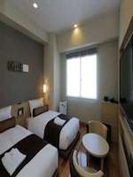
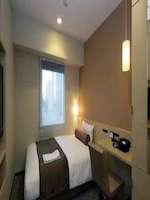
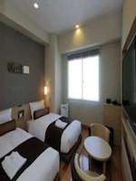
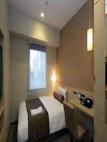

3-minute walk from the station Sanchome! Is convenient access to all parts in the subway! 3-minute walk from the train station than Sanchome C7 · E2 exit, I do not think a 9-minute walk from JR Shinjuku Station (East Exit), It is a quiet place full of green near Shinjuku Gyoen National Garden, Hanazono Shrine, etc.. ◆ Please use also light complimentary breakfast that morning baked bread, etc.! ◆
 


